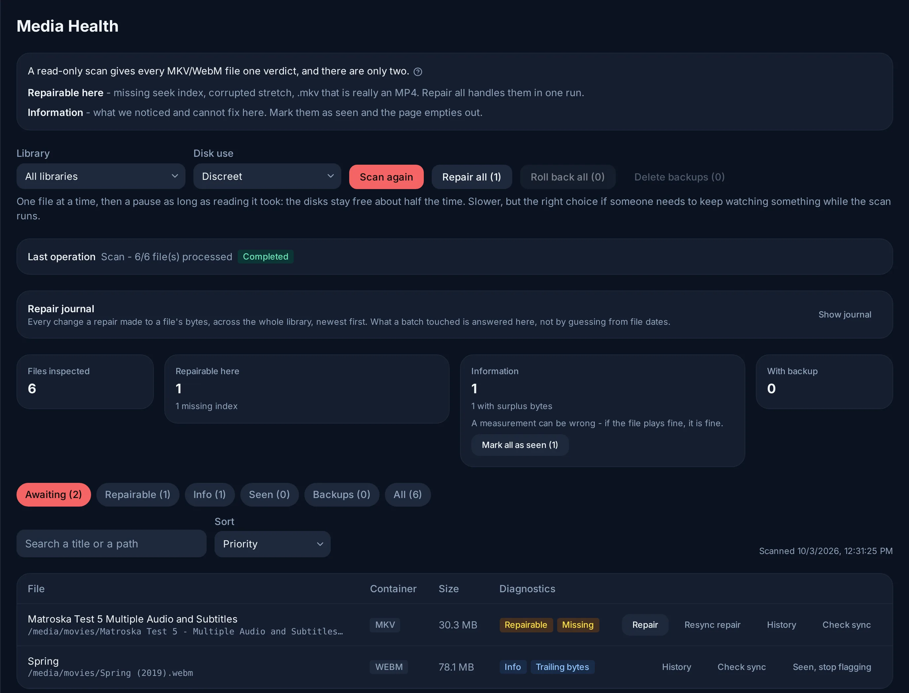
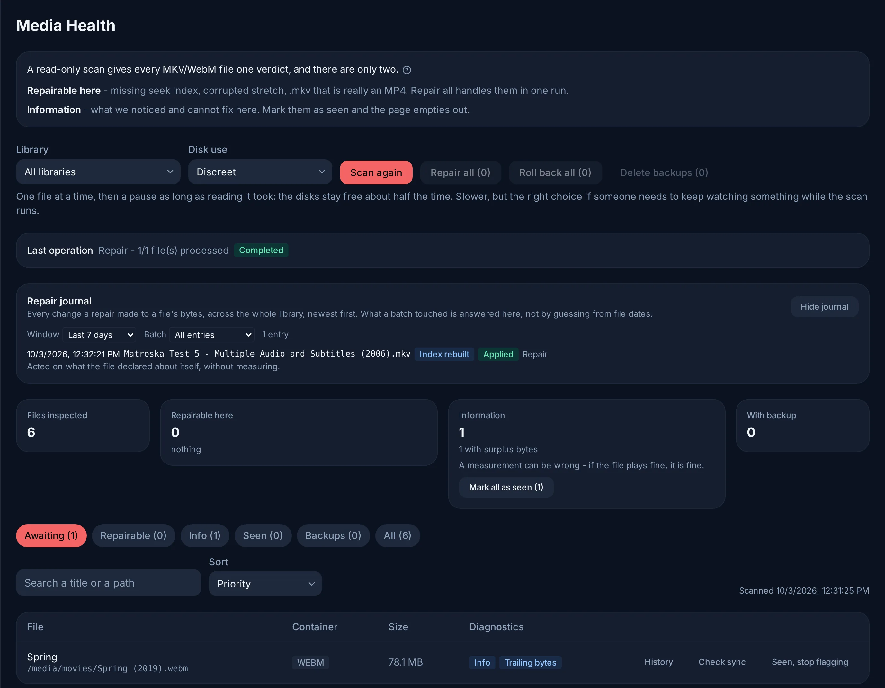

मीडिया स्वास्थ्य¶
किसी टाइटल में आगे-पीछे जाना धीमा है, एक ही जगह पर अटकता है, या उसकी आवाज़ धीरे-धीरे खिसक जाती है: एडमिन → मीडिया स्वास्थ्य आपकी लाइब्रेरी की हर MKV/WebM फ़ाइल पढ़ता है और हर एक को एक ही जवाब देता है। मकसद है एक ऐसा पेज जो खाली होता जाए: जो Evey ठीक कर सकता है, उसे वह ठीक करता है (सभी मरम्मत करें); बाकी के बारे में एक बार बताया जाता है और उसे देखा हुआ चिह्नित किया जा सकता है।

दो फ़ैसले¶
जो फ़ाइल स्वस्थ नहीं है (इंडेक्स, कंटेनर, साइज़ और ऑडियो का समय ठीक हैं), उसे दो में से एक जवाब मिलता है, और जानबूझकर सिर्फ़ दो:
| फ़ैसला | इसका मतलब | Evey क्या करता है |
|---|---|---|
| सुधार योग्य | कोई खराबी जिसकी मरम्मत Evey इसी सर्वर पर करता है। | सभी मरम्मत करें इन्हें बैकग्राउंड में संभालता है; उसकी गिनती ठीक इनकी गिनती होती है। |
| जानकारी | फ़ाइल के बारे में नापी गई कोई बात, जिसे Evey अपने-आप दोबारा नहीं लिखता। | कुछ नहीं। इसे देखा हुआ चिह्नित करें। |
इनमें से कोई भी आपसे हाथ से कोई काम नहीं माँगता। जिस माप पर Evey कुछ नहीं कर सकता, वह केवल एक टिप्पणी है, और माप गलत भी हो सकता है: अगर फ़ाइल ठीक से चलती है, तो कुछ करने की ज़रूरत नहीं है।
सुधार योग्य¶
- सीक इंडेक्स अनुपस्थित, या ऐसा इंडेक्स जो इस्तेमाल नहीं हो सकता। लक्षण: आगे-पीछे जाना या दोबारा शुरू करना धीमा है। इंडेक्स एक अस्थायी कॉपी में फिर से बनाया जाता है, कॉपी को पूरी तरह जाँचा जाता है (ट्रैक, अवधि, इंडेक्स), फिर वह फ़ाइल की जगह ले लेती है।
- गलत कंटेनर:
.mkvअसल में एक MP4 या MOV फ़ाइल है। उसका नाम बदलकर.mp4कर दिया जाता है और लाइब्रेरी भी यह बदलाव ले लेती है; कुछ दोबारा नहीं लिखा जाता। - क्षतिग्रस्त हिस्सा: फ़ाइल के बीच में एक खराब हिस्सा। मरम्मत उसे छोड़ देती है और उसके बाद का हिस्सा फिर से सिंक करती है, इसलिए वे बाइट हमेशा के लिए खो जाते हैं। मरम्मत वाला डायलॉग इसके लिए साफ़ तौर पर पूछता है (N क्षतिग्रस्त फ़ाइलें भी पुनः समन्वयित करें); अगर इस पर निशान न लगाया जाए, तो क्षतिग्रस्त फ़ाइलों को छुआ नहीं जाता। यही उस फ़ाइल पर भी लागू होता है जिसकी खराबी दोबारा लिखते समय ही दिखती है (मरम्मत के दौरान खराबी मिली): स्कैन सिर्फ़ हेडर पढ़ता है और इसे देख नहीं सकता था।
- ट्रैक ब्लॉकों में संग्रहीत: कुछ मिनट वीडियो, फिर कुछ मिनट ऑडियो, साथ-साथ होने के बजाय। कोई भी प्लेयर पहले ब्लॉक से आगे नहीं जा पाता। ट्रैक फिर से मक्स करें उन्हें बिना दोबारा एन्कोड किए साथ-साथ लिखता है, और फ़ाइल बदलने से पहले जाँचता है कि हर पैकेट पहुँच गया है।
जानकारी¶
- अधूरा डाउनलोड: फ़ाइल का अंत कभी पहुँचा ही नहीं। फ़ाइल वहाँ तक चलती है जहाँ वह कटी है। कोई भी टूल गायब हिस्सा वापस नहीं ला सकता; सिर्फ़ सोर्स ला सकता है।
- अनुमानित सीक: फिर से बने इंडेक्स में अब भी एक खाली जगह है, अक्सर आखिर के क्रेडिट। उस खाली जगह में आगे-पीछे जाने पर आप उसके किनारे पर पहुँचते हैं; बाकी हर जगह आगे-पीछे जाना सटीक है।
- ऑडियो +N सेकंड पर: कोई ऑडियो ट्रैक तस्वीर के बाद शुरू होता है। डबिंग को फ़िल्म के किसी कट से इसी तरह मिलाया जाता है, और हर प्लेयर इसे मानता है। Evey इसे कभी दोबारा नहीं लिखता।
- ऑडियो ट्रैक N सेकंड अलग: फ़ाइल के अपने ऑडियो ट्रैक आपस में मेल नहीं खाते, यानी उनमें से एक गलत जगह पर है। कोई भी माप यह नहीं बता सकता कि कौन सा।
- आवाज़ तस्वीर से N सेकंड हटी हुई: कोई ऑडियो ट्रैक उस समय से हटा हुआ है जहाँ तस्वीर के साथ समय-मिलान वाले उपशीर्षक संवाद दिखाते हैं।
- ऑडियो ट्रैक 0 पर खींचा गया: यह वह निशान है जो पहले की कोई मरम्मत छोड़ती है, जब उसने किसी ट्रैक को उसकी बताई गई देरी जितना पीछे खींचा था। अगर डबिंग अब पहले चलती है, तो हटाई गई देरी अब फ़ाइल में नहीं है।
- ऑडियो -N s: कोई ऑडियो ट्रैक तस्वीर से पहले खत्म हो जाता है। प्लेबैक उस खाली जगह को चुप्पी से भरता है।
- अतिरिक्त बाइट: फ़ाइल की सामग्री के अंत के बाद फ़ालतू बाइट। फ़ाइल ठीक चलती है।
- अपठनीय: स्कैन फ़ाइल को पढ़ नहीं सका (फ़ाइल गायब है, पढ़ी नहीं जा सकती, या कंटेनर को पार्सर ने मना कर दिया)। माउंट या सोर्स जाँचें।
सिंक को आँख से जाँचना¶
ऑडियो वाली तीन टिप्पणियों के लिए, फ़ाइल की लाइन पर सिंक जाँचें सर्वर पर एक छोटी क्लिप बनाता है: एक पल, एक ट्रैक और आज़माने के लिए एक अंतर चुनें, फिर उसे देखें, ज़रूरत हो तो धीमा करके। ट्रैक की आपस में तुलना बताती है कि वे मेल खाते हैं या नहीं, यह कभी नहीं कि कौन सा तस्वीर के साथ चलता है; यह सिर्फ़ देखकर तय होता है।
इस ट्रैक पर N सेकंड लागू करें उस ट्रैक को चुने गए अंतर जितना खिसका देता है। यह बदलाव आपके फ़ैसले के रूप में दर्ज होता है, माप के रूप में नहीं, और इतिहास उसे वापस ले सकता है।
देखा हुआ चिह्नित करना¶
देखा, अब न दिखाएँ (एक फ़ाइल) और सभी को देखा हुआ चिह्नित करें (एक समूह) जानकारी वाली टिप्पणी को प्रतीक्षारत व्यू से हटा देते हैं। सिर्फ़ टिप्पणियाँ चिह्नित की जा सकती हैं: सुधार योग्य खराबी की मरम्मत होती है। यह निशान फ़ाइल की मौजूदा हालत के लिए है: अगर उसका साइज़ या तारीख बदलती है, तो अगला स्कैन उसे फिर से जाँचता है। फिर से दिखाएँ यह निशान हटा देता है।
टेबल के ऊपर के व्यू (प्रतीक्षारत, सुधार योग्य, जानकारी, देखे गए, बैकअप, सभी) और खोज बॉक्स से आप बड़ी लाइब्रेरी को धीरे-धीरे निपटाते हैं: प्रतीक्षारत आपकी करने वाले कामों की सूची है।
स्कैन¶
स्कैन हर फ़ाइल की शुरुआत (कुछ किलोबाइट) पढ़ता है, और जो फ़ाइल नहीं बदली उसके लिए पिछला जवाब दोबारा इस्तेमाल करता है। डिस्क का उपयोग रफ़्तार तय करता है:
- संयमित: एक बार में एक फ़ाइल, फिर उतना ही रुकना जितना पढ़ने में समय लगा। डिस्क लगभग आधा समय खाली रहती हैं, ताकि कोई देखना जारी रख सके।
- तेज़: एक साथ कई फ़ाइलें, बिना रुके। कई डिस्क पर फैली लाइब्रेरी पर लगभग तीन गुना तेज़, लेकिन इस बीच प्लेबैक अटक सकता है।
दो स्थितियों में स्कैन सब कुछ फिर से जाँचता है: कोई फ़ाइल जो बदल गई, और Evey का कोई नया वर्ज़न जिसकी जाँचें बदल गई हैं। इसलिए ऐसे अपडेट के बाद पहला स्कैन बड़ी लाइब्रेरी पर लंबा होता है; उसके बाद वाले फिर जल्दी होते हैं।
बैकअप, इतिहास और वापस लेना¶
बैकअप रखें डिफ़ॉल्ट रूप से चालू है: दोबारा लिखी गई हर फ़ाइल अपनी असली कॉपी को
अपने बगल में .mkvgobak के रूप में रखती है। बहाल करें एक फ़ाइल वापस लाता
है, सभी बहाल करें चुने गए दायरे को, और बैकअप हटाएं उन्हें हमेशा के लिए
हटा देता है। बंद होने पर, एक रन के दौरान सिर्फ़ आखिरी कुछ कॉपियाँ रहती हैं और रन
के अंत में हटा दी जाती हैं; तब हर मरम्मत को फ़ाइल बदलने से पहले और गहराई से जाँचा
जाता है। अगर हर फ़ाइल की कॉपी रखने से वॉल्यूम भर जाएगा, तो पेज रन से पहले यह बता
देता है।
मरम्मत जर्नल पूरी लाइब्रेरी में हर वह बदलाव दिखाता है जो किसी मरम्मत ने किसी फ़ाइल के बाइट में किया; इतिहास इसे एक फ़ाइल के लिए दिखाता है। कुछ बदलाव वहीं से, बिना किसी कॉपी के, वापस लिए जा सकते हैं:
| बदलाव | वापस लेना |
|---|---|
| ऑडियो ट्रैक खिसकाया गया | ठीक उल्टा खिसकाव लागू करता है। |
नाम बदलकर .mp4 किया गया |
नाम वापस पहले जैसा करता है। |
| इंडेक्स फिर से बनाया गया | वापस लेने को कुछ नहीं: तस्वीर और आवाज़ को छुआ नहीं गया। |
| क्षतिग्रस्त हिस्सा छोड़ा गया | खोए हुए बाइट सिर्फ़ बैकअप वापस लाता है, इसीलिए यह मरम्मत हमेशा एक बैकअप रखती है। |

मरम्मत आपके मीडिया फ़ोल्डर में लिखती है। उन्हें कंटेनर में पढ़ने-लिखने (read-write)
के लिए माउंट होना चाहिए (वॉल्यूम पर :ro नहीं); अगर किसी रन में केवल-पढ़ने वाला
वॉल्यूम मिला, तो पेज यह बताता है। स्कैन दोनों तरह से काम करता है।
कमांड लाइन से¶
यही इंजन ऑपरेटर CLI से भी मिलता है, देखें कमांड लाइन:
evey admin reindex-no-cue --root <dir> [--apply] [--resync]गायब इंडेक्स फिर से बनाता है; जब तक--applyन दिया जाए, यह सिर्फ़ आज़माइश (dry run) होता है;evey admin validate-streaming --root <dir>स्ट्रीमिंग की तैयारी की रिपोर्ट छापता है, बिना कुछ बदले।